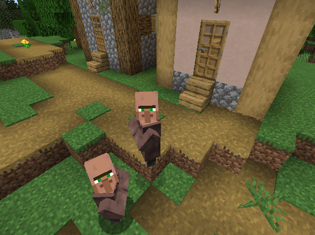

We’re thankful to the Barbara Peterson Ruhlman ’54 Fund for Interdisciplinary Studies and the Mount Holyoke LYNK program for supporting this project.
The Minecraft title screen.
¹ Churchill, Ward, Fantasies of the Master Race edited by M. Annette Jaimes. Common Courage Press, 1992.
² Bogost, Ian, Persuasive Games. MIT Press, 2007.

Clockwise from top left: 1. Mining coal; 2. A map being filled in;
3. A pair of villagers; 4. A skeleton monster.
³ Dooghan, Daniel, Digital Conquerors: Minecraft and the Apologetics of Neoliberalism. In Games and Culture v. 14, 2016.
⁴ Stegman, Erik and Phillips, Victoria F., Missing the Point: The Real Impact of Native Mascots and Team Names on American Indian and Alaska Native Youth. Center for American Progress, July 2014.